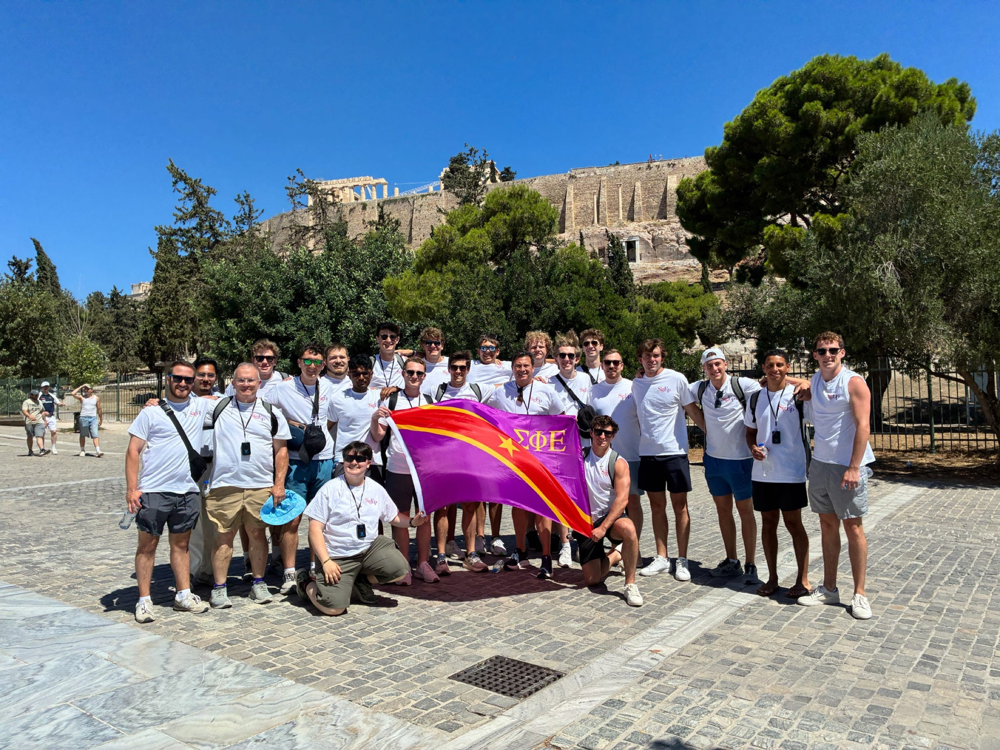
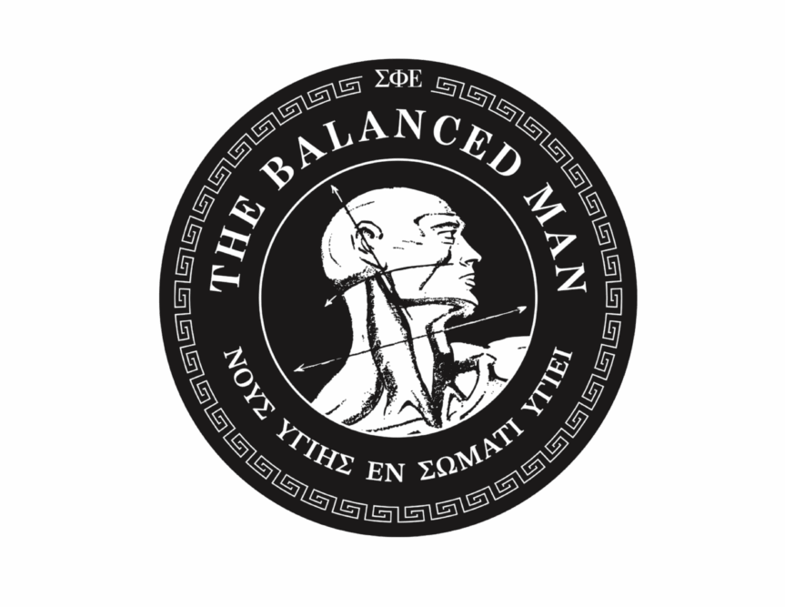
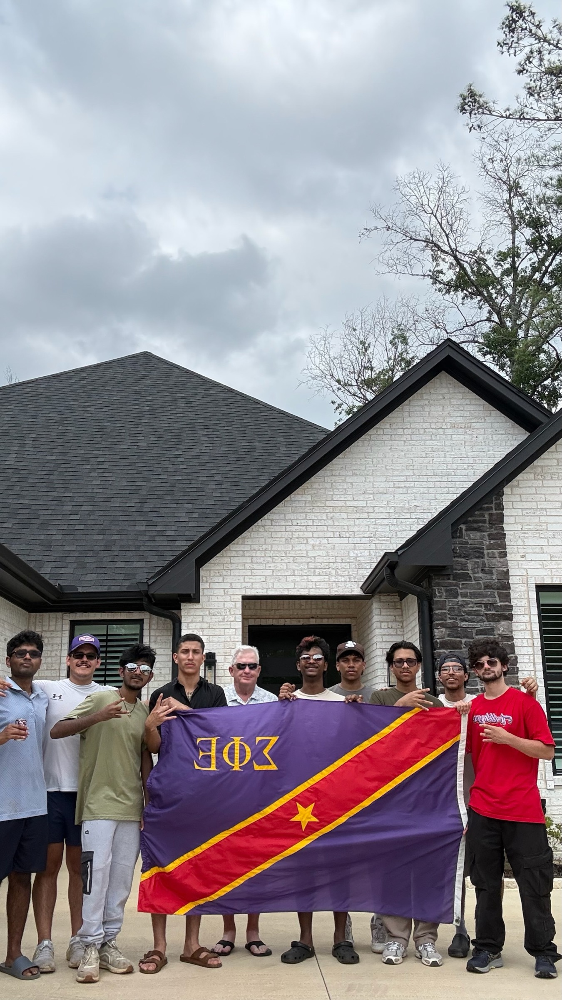
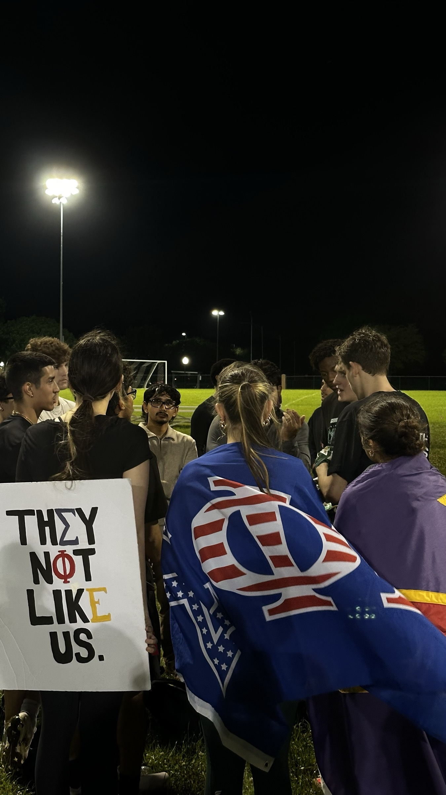
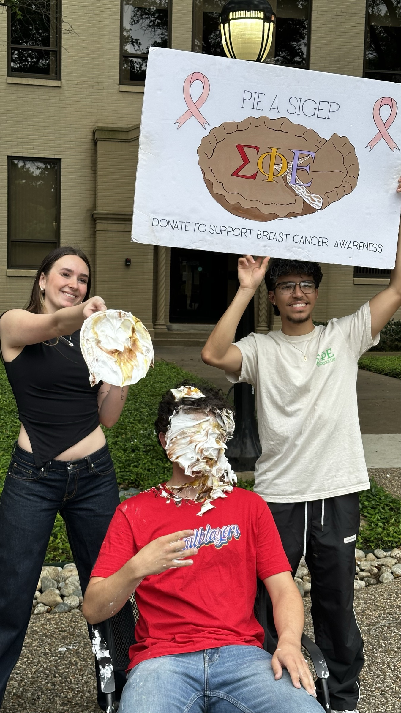

SIGMA PHIEPSILON
Building balanced men through sound mind, sound body, and sound spirit — brotherhood, scholarship, and service at UT Arlington.

Brotherhood beyond campus
Sound mind.
Sound body.
Sound spirit.
Texas Kappa is the Sigma Phi Epsilon chapter at the University of Texas at Arlington. We're built on the Balanced Man Ideal — developing brothers intellectually, physically, and spiritually through genuine friendship, sound learning, and moral compass.
Sound Learning
Academic accountability and mentorship that keep scholarship at the center of chapter life.
Rightly Directed Friendship
A lifelong brotherhood built on trust — on campus and long after graduation.
Moral Compass
Leadership grounded in integrity, service, and accountability to each other and UTA.
Signature programs
From the tournaments that fund our philanthropy to the boards that run the chapter — here's where to find it all.

Annual EventGolf Tournament
Our annual fundraising tournament bringing brothers, alumni, and sponsors together on the course.
Learn more
Regional RivalryTri-State Tournament
Regional competition uniting SigEp chapters across state lines for a weekend of brotherhood and rivalry.
Learn more Alumni Volunteer Corp.
Alumni Volunteer Corp.
AVC Board
The alumni volunteers who guide, mentor, and support Texas Kappa from the outside in.
Meet the board
Chapter LeadershipExec Board
The active brothers elected to lead Texas Kappa's operations, programming, and standards.
Meet the boardPhilanthropy
Every year Texas Kappa raises funds and awareness for causes that matter to our brothers and our community — from campus fundraisers to national partnerships.
Moments from Texas Kappa
Interested in joining the brotherhood?
Reach out to learn about recruitment, our chapter house, or upcoming events at UT Arlington.